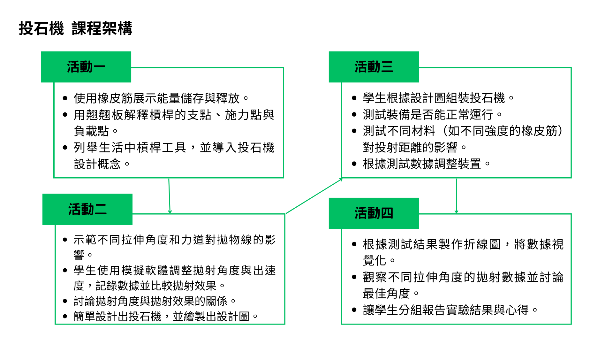

學習表現
理解科技產品用途與運作方式，繪製設計構想圖，安全使用手工具與材料，並在實作活動中展現問題解決態度。
科技領域教學方案
從投石機仰角與初速度的電腦模擬出發，延伸到橡皮筋、竹筷與雷切木板的實體製作，讓學生透過設計、測試、數據整理與團隊回饋完成一項 STEAM 科技專題。
設計者：顏榮泉教授團隊及其指導成員。教材來源：自編教材。
設計依據
本方案串聯自然科學、數學與資訊科技，讓學生理解能量轉換、槓桿與拋射關係，並把模擬資料轉化為實體投石戰車的設計依據。
理解科技產品用途與運作方式，繪製設計構想圖，安全使用手工具與材料，並在實作活動中展現問題解決態度。
探究常見科技產品的功能與機構原理、設計構想表達、手工具安全操作、槓桿原理、彈性位能與資料處理。
A2 系統思考與解決問題；C2 人際關係與團隊合作。培養分析、溝通、分工與共同修正作品的能力。

教學流程
每一節課都連接前一階段的資料與作品，從問題情境逐步建立設計目標、實作方法與學習評鑑。
操作投石機教學網站，改變投石機仰角，觀察拋物線軌跡與投射距離的差異。
在網站中測試仰角與初速度，將操作成果填入電腦模擬實驗紀錄表，形成製作目標。
延續模擬測試，整理拋物線變化與數據，完成投石戰車的設計構想與實施方案。
調整橡皮筋與竹筷的位置，改變彈力及支點／臂長比例，進行多次實體投射測試。
整理實測數據，小組分享最佳條件與製作心得，完成自評、互評與學習歷程總結。
學習重點
學生同時發展認知、情意與技能，從理解原理、操作模擬到安全製作與數據分析。
| 面向 | 學習重點 | 課堂展現 |
|---|---|---|
| 認知 | 說明橡皮筋儲存與釋放機制，理解槓桿原理。 | 比較仰角、初速度對距離的影響，分析模擬與實測差異。 |
| 情意 | 建立科技探究興趣與嚴謹自律的安全意識。 | 主動溝通、積極分工，理性接受同儕互評並改進作品。 |
| 技能 | 熟練操作模擬軟體，繪製結構清晰的投石機設計圖。 | 安全使用手工具組裝作品，完成數據整理與初步分析。 |
| 跨域 | 自然科學、數學與資訊科技共同支援專題學習。 | 結合拋物線、角度距離、參數控制、數據採集與折線圖。 |
活動詳情
以下內容依照新教案的五個步驟整理，保留操作任務、學習產出與課堂安全提醒。
教具與資源
以投石機材料包與虛擬實驗室共同支援五節課，讓學生先用數據形成目標，再用實體作品驗證設計。
觀察模擬
比較仰角、初速度與拋物線距離。
完成製作
使用雷切木板、木條、橡皮筋與竹筷組裝。
整理證據
以實測紀錄與折線圖說明設計選擇。
課堂安全注意事項
評量方式
評量兼顧實作表現、紀錄表內容與學生的個人反思及團隊合作。
檢視投石戰車組裝完成度，以及手工具與材料的安全操作。
證據：作品檢查、教師觀察檢核電腦模擬與實驗結果評估的數據是否完整、清楚且能支持結論。
證據：模擬紀錄、實驗結果評估表觀察學生是否能分享製作心得、接受回饋並說明團隊的調整策略。
證據：自評、互評與小組分享教材附件
以下提供本次更新的完整教案 PDF，以及投石車組成圖與雷切圖供課堂使用。